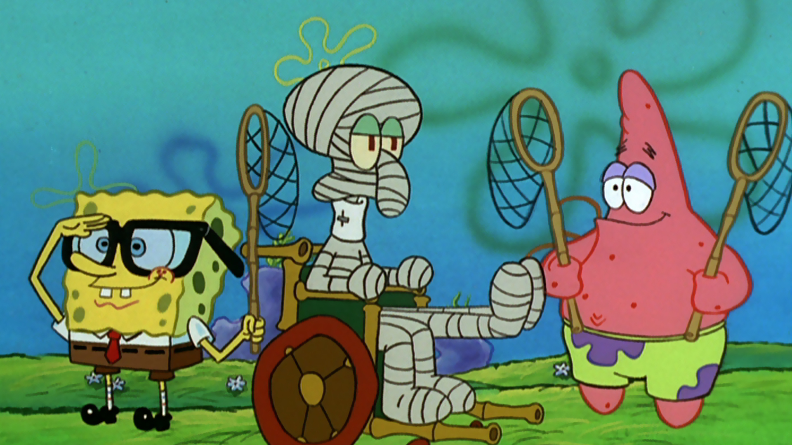

Have you been living under a rock? Well, Patrick Star has! Which is probably why he calls pencils “writing sticks” and doesn’t know if mayonnaise is an instrument or not. Even though his attention span is approximately .02 seconds long, Patrick is still the sweetest starfish around! (Taken from the Nikelodeon Universe website)
Likes: Jellyfishing, donuts, sleeping.
Dislikes: Spiders, thinking, bullies.
